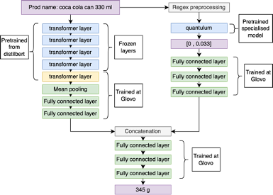
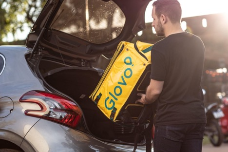

This blog offers informed opinions and perspectives relating to nascent technologies in data-centric engineering. Adrià Salvador and Ponç Palau (Glovo) present the development of Glovo’s language modelling tools, which inform their logistics algorithms by estimating the weight of deliveries.
Glovo is one of Europe’s largest on-demand delivery platforms, operating in more than 25 countries, and 1500+ cities. Due to increased demand in the grocery sector, in recent years the company has shifted from being a mostly food delivery service to a service where groceries play a major role.
One of the biggest challenges that we faced at Glovo when moving to the grocery delivery space was the increased prevalence of big orders — orders that would not fit in the backpack of our couriers, or orders that were too heavy to be transported. This made sense: when ordering groceries online, customers order more items than, for instance, when they are getting their office lunch.
Appropriately detecting and handling big orders was crucial. A big order that goes undetected has significantly worse unit economic costs than a normal order: agents have to get involved, delivery times increase, and user experience deteriorates. Worse than that, if a small order is incorrectly flagged as a big order, it costs us nearly double to process, as we have to dispatch two or more couriers to handle it.
Our initial solution was to ask big grocery stores to label their products by providing us with weight and volume measurements. This was successful in labelling a fraction of our product offering and allowed for a certain level of automation. However, it proved hard to scale: we operate with thousands of Small and Medium-sized Enterprise partners in a massively diverse environment (from eastern Europe to sub-Saharan Africa). This meant that asking our partners to manually label all their products was not a realistic strategy. We needed a way to fully automate our weight and volume estimations.
The importance of Data-Centric AI for our production model
When looking at the labelled data provided by our partners, we realised that they contain a significant amount of wrongly inputted data. Typos, measurement unit misunderstandings, and other mistakes were prevalent.
The first step that we took to fix this was to clean the large dataset of labelled data until we obtained a fully reliable dataset. Very much in the spirit of data-centric AI, we have consistently observed that the biggest gains in accuracy result from curating the datasets used to train our models.
To do this, we used a combination of isolation forests and distribution-based outlier detection to prune out samples with clearly incorrect labels. We first removed the values that were extremely high in our dataset using high-level business-related information. However, these outliers were not the single source of error in our dataset. We still had samples that were incorrectly labelled due to confusion with measurement units: grams instead of kilograms, meters instead of millimeters, etc. In order to detect and correct these samples, we applied the following rules:
During our EDA, we noticed that stores often had consistent labelling errors (for example, confusing grams and kilograms or meters and centimetres). Therefore, we grouped our samples by store and then analysed the median weight and volume associated with that store. For the case of weight, in the lower and upper quantiles, we could detect stores that mislabeled their product due to an error with measurement units. For the volume case, it was more complex because the final label (volume) was the result of the product of height, width, and length: an error in a single dimension could corrupt the final label. To solve this problem, we ran an isolation forest algorithm to detect outliers on the data (grouped by store) in the 3D space of height, width and length. These allowed us to spot errors in each dimension and correct them.
We used regex methods and the quantulum library to extract any present amounts of weight or volume in the product name. For example, for the product name “Coca Cola 330 ml’’ this processing would extract 0.33 l. We used this output as a prior to update the distribution of possible weights and volumes with a heuristic.
Finally, we manually reviewed the examples that had the highest variance and highest entropy of the labels, as well as the products that are bought most frequently, and labelled them correctly.
The architecture: Language Models come to play
Due to engineering constraints, we decided to build a model that would take input features as solely the name of our products in natural language. The model would then have to predict the weight and volume of the given product with high precision.
The state of the art for NLP processing are Large Language Models, concretely, models based on the transformer (encoder-decoder) architecture. Initially, we tried to solve the problem using a vanilla architecture: a multilingual transformer with downstream fully connected layers. This showed strong performance, but we were convinced that we could improve the model using domain knowledge. We wanted to use the fact that we knew exactly what parts of the text contained strong information with regard to product dimensions.
This line of thought followed another important principle of production ML systems: when you have domain knowledge regarding the problem, you should use it. To do so, we used quantulum to extract normalised weight and volume measurements from product names. For example, for “Coca-cola 300 ml”, we extract 330 millilitres as a volume feature and normalize it to a common unit.
These extracted measurements enter the model through a separate, fully connected, tower (neural network). The output of the two towers (transformer and quantulum) is then merged and sent downstream through further fully connected layers. The final prediction is a measurement, either weight or volume, that then is aggregated and compared with our weight and volume limits, to determine whether the order is big.

This architecture has been extremely successful and provided a significant delta in accuracy, compared to using a transformer, to directly learn the weights and volumes in the dataset.
Deploying LLMs in production at low latency
We deploy the model using our machine learning platform. In short: we dockerise the model and serve it through an API. We need the model to do predictions in low latency (response time) because it will be consumed by humans, and user experience gets significantly deteriorated with higher latency times.
To achieve a latency of approximately 100 milliseconds, we deploy the volume and weight models separately and use distilbert as a pre-trained model for our transformer tower. Distilbert is a conversion of the popular language model “BERT” that provides 60% better latency while preserving 97% accuracy. Autoscaling is handled by kubernetes.

Evaluation of the algorithm
We focus on measuring two types of metrics (i) offline model accuracy metrics such as mean absolute error and mean squared error, and (ii) online business-related metrics such as agent costs, courier complaints, etc.
We have run a backtest based on business metrics using our historical data for orders. Essentially, we look at which orders that were flagged as big by agents or couriers would be detected by our new algorithm. To do this, we try two different heuristics (i) using the language model algorithm only when weights and volumes data are missing, (ii) using the language model all the time, even when labels are available. The second heuristic performs more than 11 points (11% in absolute terms) in precision better than the first one.
For the second heuristic, we use the machine learning model as an anomaly detector. When weight or volume information is available, our backend compares it with the output of the model, and only if the model prediction is close to the weight stored in the backend, it considers the label valid. Otherwise, the network output is used. What this essentially means is that our network is more precise than our labels — as it has been trained with a well-curated dataset.
We need online business metrics because our big order labels are not perfect. Using the algorithm to analyze all our past orders, we observed that couriers had, on some occasions, taken orders that were heavier than what they were supposed to be. This means that if a courier takes an order without reaching courier support, we can’t really consider that order to be small. Similarly, we have observed instances of orders labelled as big by customer support that were in fact small orders. Both examples are prevalent and mean that we need to use a real-world A/B test to measure our algorithm’s impact.
To do so, we have scheduled to run an A/B test that will focus on a medley of indicative metrics that we know are directly related to the accuracy of our big order algorithm. These are related to agent cost and handling time, user experience, delivery time, courier complaints, and a metric that is crucial for our bottom line: cost per order.
Conclusion and future steps
In conclusion, at Glovo we have seen that:
Transformers can be used for much more than traditional Natural Language Processing.
A mid-size dataset of very well-labelled examples can help algorithms scale globally at high precision. Data-Centric techniques were the ones that provided the biggest jump in accuracy for our model.
For real-life situations, where data can be faulty, one can use deployed deep learning models as outlier detectors. Similar to what is done with autoencoders, a deployed model is a reflection of the distribution that is trained upon, and it can be used to find out-of-distribution examples.
If possible, one should always encode domain knowledge within the model architecture. After Data-Centric techniques, this was the second most important modification in terms of accuracy.
Competing Interest: Adrià Salvador is the Lead Data Scientist at Glovo’s CORE DS team. Ponç Palau is a Data Scientist in the CORE team.
Keywords: Supply Chain Management; Language Models; Logistics; Natural Language Processing
This is the blog for Data-Centric Engineering, an open-access journal published by Cambridge University Press and supported by the Lloyd’s Register Foundation. You can also find us on LinkedIn. Here are instructions for submitting an article to the journal.